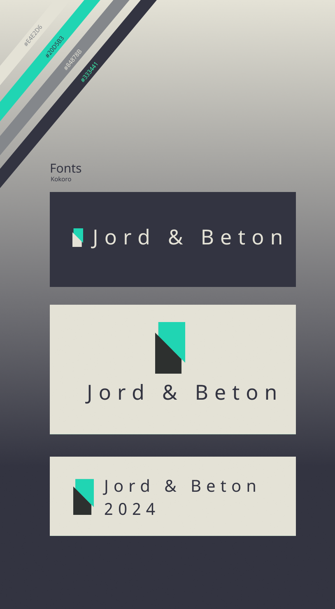
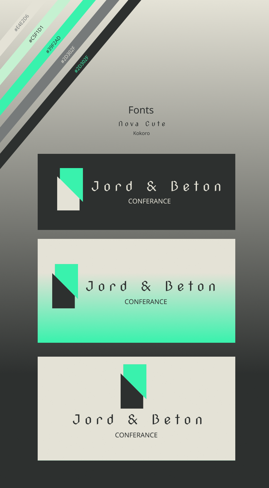
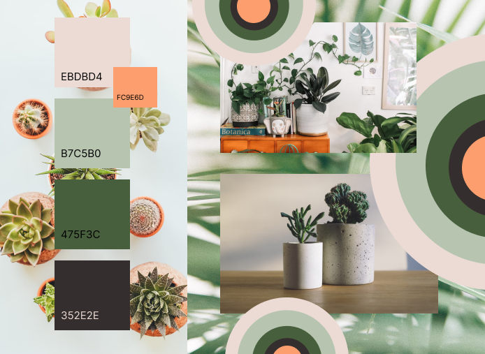
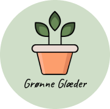
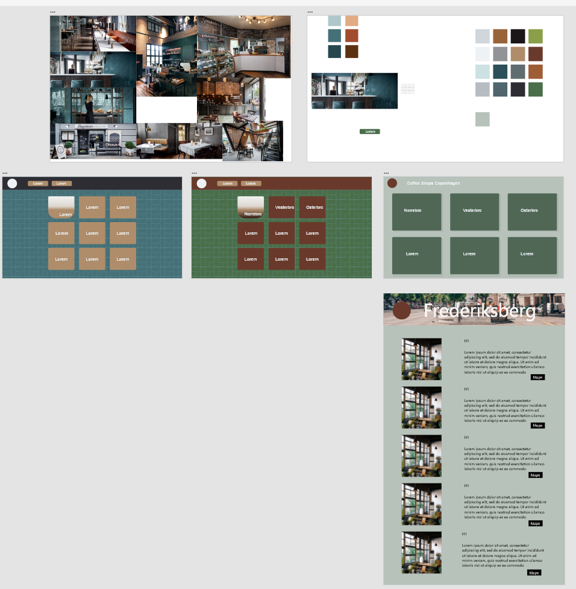
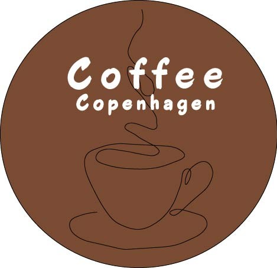

Denne side er ikke lavet færdig
I løbet af min praktik hos OptumCE bidrog jeg til designet af en konferencehjemmeside. Jeg udviklede et moodboard, designede et logo, og skabte en animeret version af logoet, der sammen afspejlede konferencens tema og OptumCE's brandidentitet.







